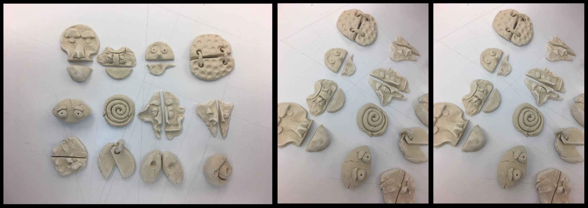
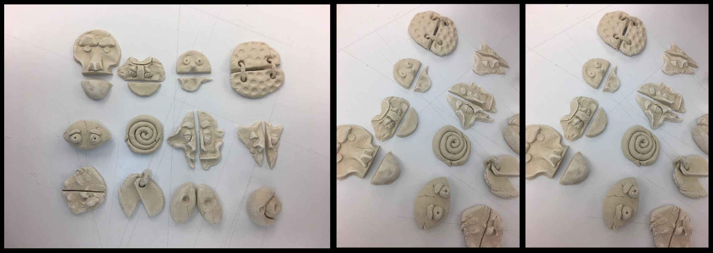
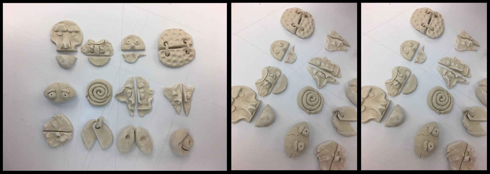

This is a performance piece created to represent the use of emotion to hide non-cathartic emotions.
The Purpose
Non cathartic emotions refer to emotions that have no true resolution. Jealousy, depression, existensial dread, those feelings and thoughts that continue to linger and have no true means of resolving.
The scenarios which I would act out to conceal my non-cathertic emotions with a more socially understandable emotion is what inspired me to create this experience. When I was asked "how are you?", rather than replying "good" or some other generic response, I would develop a complex narrative that was in fact a concealing of my true emotional state. Whether I did this to convince myself or the other person that I was ok is not clear. The responses could be as complex as "ugh I'm actually dead all I did was watch TV and stay up protoyping this project" when in reality I had stayed up sitting on my own existential thoughts.
I discovered that it was more socially acceptable to admit a negative emotion due to productivity as opposed to poor mental health. I was now not only carrying the burden of the lie I had created, but also the shame of having non-cathartic emotions. To admit depression, jealousy, and other emotions with to resolution is often associated with weakness and an inability to "get over it" as many say. This cycle of no release, no end, and no external truth is emodied in this performance and its elements.
The Masks

The mask itself was constructed with paper mache and cardboard. The irregular and inconsistent texture of both the material and the mask itself was essential to represent the uncontrollable brewing of my true emotions. To prototype different ways in which the mask could move, I created small scultures of different masks and the forms it could take.